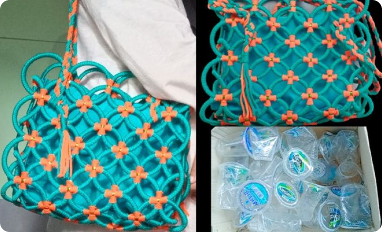
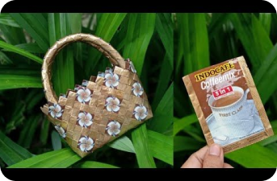
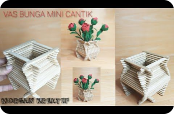
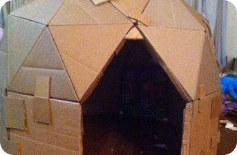
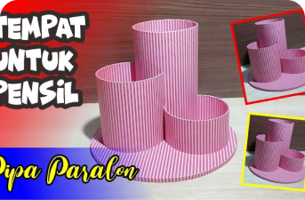
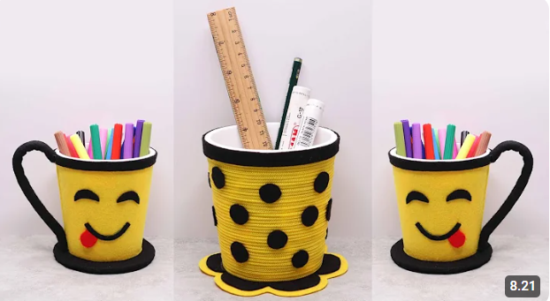

DIY TAS CANTIK!
Finaliza
500.000 + ditonton - 2 bulan yang lalu
Link tokonyabagitulah langkah langkah yang bisa kalian ikuti ketika kalian ingin mengubah sampah menjadi tas diy yang cantik.
sangat mudah bukan? jangan lupa follow dan subscribe channel kita.

DIY TAS CANTIK!
2,1 jt ditonton - 1 bulan yang lalu

BIKIN KARDUS TENDA!
503 rb ditonton - 2 minggu yang lalu

VAS BUNGA MINI CAK!
20 rb ditonton - 1 bulan yang lalu

MEMBUAT VAS MINI
20 rb ditonton - 1 bulan yang lalu

TUTORIAL TEMPAT AESTHETIC
4 rb ditonton - 1 hari yang lalu